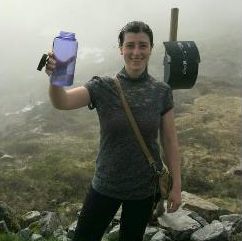

<div role="tabpanel" class="tab-pane fade in active">
  <div class="container">
    <h3>Project 415x</h3>
    <p>Project 415x is a learning tool for students to have a direct visual and kinesthetic experience of core concepts in Linear Algebra</p>

    <h3>About</h3>
    <p>
      Started in Fall 2015 at the University of Illinois at Urbana-Champaign, Project 415x is a MATH 492 Undergraduate Research Project under the supervision of J.L. Doob Research Assistant Professors Cary Malkiewich and Jenya Sapir. The project is aimed at MATH 415 Linear Algebra students to have a direct visual and kinesthetic experience of core concepts in the subject matter. The project includes but not limited to visualization tools and documentation to make the learning experience much more easier for students.
    </p>

    <h3>Team</h3>
    <br>

    Faculty
    <ul class="people">
      <li><a href="http://math.uiuc.edu/~cmalkiew/" target="_blank"> Cary Malkiewich</a></li>
      <li><a href="http://www.math.illinois.edu/~jsapir2/" target="_blank"> Jenya Sapir</a></li>
    </ul>

    Student
    <ul class="people">
      <li><a href="https://josephmilla.com/" target="_blank"> Joseph Milla</a></li>
    </ul>


  </div>
</div>
